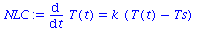
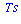
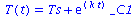
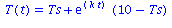
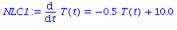
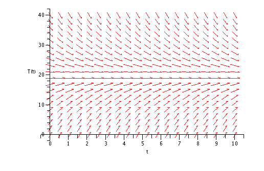
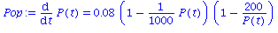
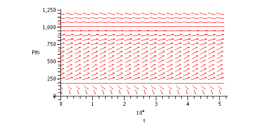

Differential Equations
| > | restart; |
Maple has a lot of tools for differential equations. We will need to load a package.
| > | with(DEtools): |
It's simple to define an ODE in Maple. For example, here's Newton's law of cooling.
| > | NLC:= diff(T(t),t) = k*(T(t)-Ts); |

Notice how the assignment := and equality = are mixed here. The name NLC is used to refer to an entire equation, not just an expression. We also have to put in the dependence of temperature T on time t explicitly, everywhere T appears, or Maple will get totally confused.
Solutions
We can find equilibrium solutions by replacing the time derivative with zero, since an equilibrium solution is supposed to be constant.
| > | solve( rhs(NLC), T(t) ); |

For simple ODEs like the ones in Chapter 10 of Stewart, we can ask maple to just solve the problem.
| > | dsolve( NLC, T(t) ); |

The odd-looking _C1 is Maple's name for the arbitrary constant that comes up in the solution. To get rid of it, we need to specify a side condition (initial condition).
| > | dsolve( {NLC,T(0)=10}, T(t) ); |

Direction fields
Many ODEs, unlike those in textbooks, don't have a nice, simple solution. There is a graphical tool called a direction field that can be used to get some idea of how solutions go without being able to write them down.
To use this tool ,we need to specify numerical values for all parameters appearing in the equation.
| > | NLC1:= eval( NLC, {k=-0.5,Ts=20} ); |

| > | DEplot( NLC1, T(t), t=0..10, T=0..40 ); |

The idea of a direction field is that since dT/dt is given by a formula, we can find it everywhere and know the slope of the solution. The arrows are drawn to show these slopes. Here it's quite obvious that the temperature wants to move towards the equilibrium at Ts=20 as t increases.
As a more complicated example, consider the equation in problem 13 of section 10.5 meant to model a population of a species.
| > | Pop:= diff(P(t),t) = 0.08*(1-P(t)/1000)*(1-200/P(t)); |

We can again ask for equilibria.
| > | solve( rhs(Pop), P(t) ); |
There are two equilibria, but they are in fact quite different.
| > | DEplot( Pop, P(t), t=0..50000, P=0..1200 ); |

The equilibrium at P=1000 is attractive (stable), whereas the one at P=200 is repulsive (unstable). Although Maple can solve the problem, these properties are not so obvious from the formula.